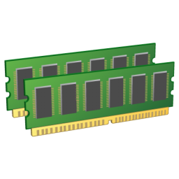

CBSE
Component Based Software Engineering
Nootan Ghimire / @nootanghimire
Raju Dawadi / @dwdraju
Shreeram Chaulagain / @shramrahul
Visualising Components

Question!
Hav yuh luk inside komputer?
Check for the damaged component
Components! ForTheWin
What IS CBSE?
Software Development based on the idea of:- re-usability
- Using standalone entities
- rapid maintainance
Components?
“A software component is a software element that conforms to a component model and can be independently deployed and composed without modification according to composition standard.” - Council and Heinmann
Components are:
- Implemented as program units
- Self-contained System
- Independently Deployable and Composable
- Loosely Coupled
Design Principles
- Independent
- Hidden Implementation Complexity
- Well Defined Interfaces
Standards
Needs to be Defined for
- Inter-operability
Examples:
- Java Beans
- COM and .NET
- CORBA's CCM
But Too Much Standards has hindered to uptake of CBSE
Component Characteristics
- Standarized
- Independent
- Composable
- Deployable
- Documented
Two Perspectives
Two Perspectives
- Implementation
- Architectural Abstraction
Component Model
Defines standards for component implementation, documentation and deployment
Component Model: Elements
- Interfaces
- Usage Information
- Deployment and Use
Interfaces
- Interface Definition
- Composition
- Specific Interface
Usage Information
- Naming Convention
- Meta-Data Function
- Customization
Deployment
- Packaging
Component Interfaces
- Provides Interface
- Requires Interface
Component Composition
Wiring components to create system.
- Sequential Composition
- Hierarchial Composition
- Additive Composition
Technologies and Framework
- Enforce a Component Model
- Support Limited Range of Component Types and Interaction among them

CBSE Process
- Requirement Analysis
- Development
- Certification
- Customization
- System Architecture Design and Integration
- System Testing
Pros and Cons
Pros!
- Remove Complexity
- Rapid Assembly
- Well Defined Software Architecture
Cons!
- Costly Development and Maintenance
- Difficulty in QA